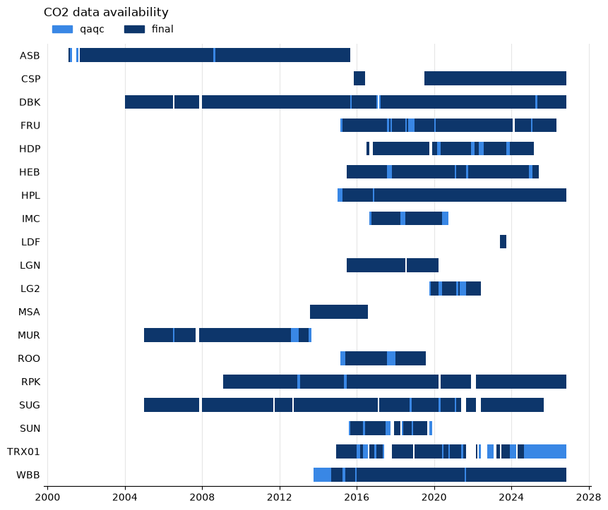

What data exists#
Note
The examples on this page read the UATAQ archive, which is only available on CHPC. They are shown as code and are not run when the documentation is built. The output under each one is from a run on CHPC on 11 October 2026. The archive keeps growing, so the dates at the end of the data, and how long a call takes, will have moved on by the time you read this.
Before you read data, find out what there is. The Sites and instruments page says which sites and instruments exist, what each measures and when each was installed, as tables and in code. That is what the sites were set up to measure, and it does not say there is data. This page shows the calls that answer the next questions, when the sites have data and whether anything is recent. When the answer is “nothing”, When there is nothing to read says what each error means.
I want to know |
Use |
|---|---|
Which sites measure CH4? |
The Sites and instruments tables, or |
What a site measures, and since when |
The same tables, or |
When a site has data, and at which level |
|
The newest data at a site |
|
One pollutant from several sites in one table |
|
Why a read failed or came back empty |
When a site has data#
The examples on this page start from these lines:
>>> import uataq
>>> from uataq import Network
>>> wbb = uataq.get_site("WBB")
Network.get_availability() tells you when sites have data for a pollutant.
Give it a time range and it returns a table with one row for each stretch of
time that has data:
>>> net = Network(["WBB", "CSP", "HDP"], "CH4")
>>> avail = net.get_availability(["2024-01-01", None], freq="W", lvls=["final"])
>>> avail
SID lvl start stop
0 WBB final 2024-01-01 2024-11-25
1 WBB final 2024-12-02 2026-10-19
2 CSP final 2024-01-01 2024-12-16
3 CSP final 2024-12-30 2026-10-12
4 HDP final 2024-01-01 2025-02-10
Each row is one site (SID), one data level (lvl) and one stretch from
start up to, but not including, stop. The times are UTC, like the data.
Between two rows of the same site there is a gap with no data: WBB has none for
the week starting 2024-11-25, and CSP has none for the two weeks starting
2024-12-16. HDP’s last row stops on 2025-02-10, and nothing follows it: HDP has
no data after that. A site with no data in the range has no rows at all.
To get the first and last date for each site:
>>> avail.groupby("SID").agg(first=("start", "min"), last=("stop", "max"))
first last
SID
CSP 2024-01-01 2026-10-12
HDP 2024-01-01 2025-02-10
WBB 2024-01-01 2026-10-19
last is the end of the final bin (see below), not the time of the last
measurement. With weekly bins it can be up to a week later.
Mobile sites (TRX01 and the others) work the same way. For an instrument
that two research groups log, the call checks both archives, so it can show data
that a read from one group would not return.
Bins#
The call cuts time into bins, one week here (freq="W"), and a bin counts as
having data if any measurement of the pollutant falls in it. So a coarse bin
hides a short gap. WBB logged no CO2 at all on 4 March 2024. Daily bins
(the default) show it, and weekly bins do not:
>>> co2 = Network(["WBB"], "CO2")
>>> co2.get_availability("2024-03", lvls=["final"])
SID lvl start stop
0 WBB final 2024-03-01 2024-03-04
1 WBB final 2024-03-05 2024-03-24
2 WBB final 2024-03-25 2024-04-01
>>> co2.get_availability("2024-03", freq="W", lvls=["final"])
SID lvl start stop
0 WBB final 2024-02-26 2024-04-01
The weekly row starts on 2024-02-26 because weeks start on Monday. A bin at
either end of the range can reach past it. freq is a pandas period alias:
"D" (day), "W" (week) or "M" (month).
Levels#
By default the call checks all four data levels (raw, qaqc,
calibrated and final; see Data Level) and gives each bin the highest level that has data in it. A stretch labeled
qaqc was therefore measured, but the final level has nothing for it. WBB
has no final CO2 for August 2021:
>>> co2.get_availability("2021", freq="M", lvls=["qaqc", "final"])
SID lvl start stop
0 WBB final 2021-01-01 2021-08-01
1 WBB qaqc 2021-08-01 2021-09-01
2 WBB final 2021-09-01 2022-01-01
get_obs() always reads the final level, so it has nothing to return for
that month (see When there is nothing to read).
A level has data in a bin when a row has a value in a _cal or a _raw
column (see Column names), the columns Network.get_obs() returns.
TRX01’s lgr_ugga_manual_cal fills only _raw, and its months
count as final.
How long it takes#
get_availability opens and reads every data file in the range. That is the
only way to know a pollutant was measured: a file can exist and hold nothing for
the pollutant you asked about. It is quick for a few sites and a short range, and
slow for everything. These times are from one process on one CHPC core, for WBB
CO2:
Call |
Time |
|---|---|
Two years (2024 and 2025), all four levels, daily bins (the defaults) |
274 s |
The same, with |
9.5 s |
The same, with |
8.1 s |
The year 2025 alone, one level: |
5 s, 14 s, 20 s, 80 s |
The defaults again, with |
76 s |
So:
Ask for the levels you need with
lvls. Therawlevel has far more files than the others and takes about fifteen times as long asfinal.Give a time range. With no
time_rangethe call covers every year the site has data.The bin size hardly matters for the time. Pick it for the question.
Use more processes for many sites.
num_processesspreads the files over that many processes, and"max"uses every core you were given. Checking CO2 at all 19 sites that measure it, every year, final level only, took 73 s withnum_processes=8. Do this in a Slurm job, not on a login node.
A script that uses more than one process needs the usual __main__ guard, or
Python 3.14 stops with a RuntimeError about “bootstrapping”. The script
below makes the figure in the next section. Save it as availability.py:
import uataq
def main():
net = uataq.Network("all", "CO2")
avail = net.get_availability(freq="M", lvls=["qaqc", "final"], num_processes=8)
ax = net.plot_availability(avail)
ax.figure.savefig("co2_availability.png", dpi=100, bbox_inches="tight")
if __name__ == "__main__":
main()
Then submit it with the account and partition you normally use (see the CHPC Slurm documentation), from the Python environment where uataq is installed:
#!/bin/bash
#SBATCH --account=<account>
#SBATCH --partition=<partition>
#SBATCH --nodes=1
#SBATCH --ntasks=1
#SBATCH --cpus-per-task=8
#SBATCH --mem=16G
#SBATCH --time=00:30:00
python availability.py
That job took 7 minutes, and the figure below is what it drew.
A picture#
Network.plot_availability() draws the table: a row for each site, time
along the bottom, and a bar wherever there is data, shaded by level. It needs
matplotlib. Pass it the table you already have, so a change of style does not
read the archive again.

CO2 at every site that measures it, from the run above. Dark bars are final data and light bars are qaqc data with nothing in final.#
The newest data#
get_recent_obs() returns the last few days of a site. It reads the same
level as get_obs(), and returns the same kind of table. The default is
10 days:
>>> obs = uataq.get_recent_obs("WBB", pollutants="CO2")
>>> print(obs.shape)
(79370, 2)
>>> obs.tail(3)
CO2d_ppm_cal CO2d_ppm_raw
Time_UTC
2026-10-12 00:42:23 435.893883 438.0069
2026-10-12 00:42:33 436.246489 438.3621
2026-10-12 00:42:43 436.133809 438.2486
Name the pollutants. With the default pollutants="all", ten days at WBB came
back as 1.3 million rows.
recent is a datetime.timedelta or any text pandas reads as a time span,
such as "3D", "3 days" or "12h":
>>> obs = uataq.get_recent_obs("WBB", recent="3D", pollutants="CO2")
>>> print(obs.index.min(), obs.index.max())
2026-10-09 02:15:05 2026-10-12 00:42:43
The last row is the newest data the archive holds at that level. This run was at 02:15 UTC on 12 October, and the newest WBB CO2 row was from 00:42 UTC the same day, so the data were about an hour and a half behind. A site that has stopped reporting has nothing recent and raises an error (HDP, under When there is nothing to read).